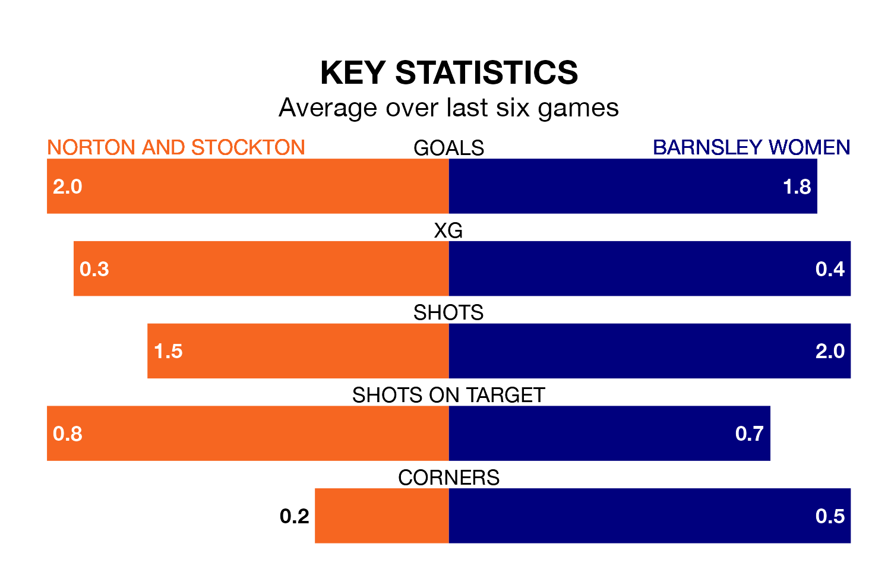

Barnsley Women travel for Sunday's early match against Norton and Stockton looking to bounce back from defeat last time out in the Women's National League Division One North.
Barnsley, who sit second in the league after 15 games, fell to a 1-0 away defeat to Doncaster Belles Women on March 3.
They face a Norton & Stockton side who picked up a win in their last match, a 3-2 victory against United of Manchester Women, and who sit eighth in the table.
With 34 goals in 15 games so far this season, Barnsley are the league's joint-highest scorers with 2.3 goals per game. And they are conceding fewer than average, letting in 17 goals at a rate of 1.1 per game.
Norton & Stockton, meanwhile, are below average scorers, with 1.5 goals per game, compared to a league average of 1.6. They have conceded 1.6 goals per game.
The hosts are in mixed form in the Women's National League Division One North, with three wins and three losses from their last six games.
With a win and two draws over that period, the away side's form is worse – they have taken five points from 18, compared to Norton & Stockton's nine.
In the last five years, Norton & Stockton and Barnsley have played each other on five occasions. Norton & Stockton won one of them, Barnsley three, and they drew once.
On average, Norton & Stockton scored 1.2 goals and Barnsley 2.6 in those matches.
Their last meeting was on October 8, when Barnsley won 2-1 at home.
Updated: 09:34 (UTC), 08/03/24